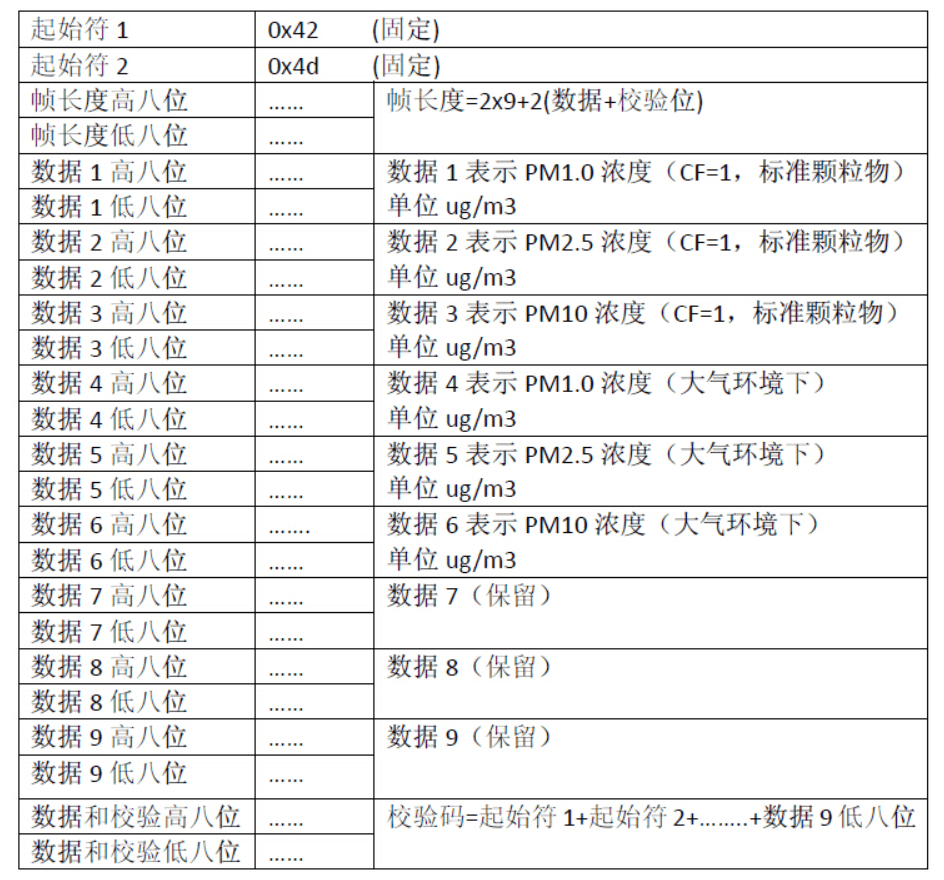

This is a program that reads the data in the serial port in linux and stores it in the local satabase.
Posted by Dusign on
2019-03-25
Computer serial port data reading is often used when using sensors. Next, I introduce the method of reading Linux serial port data in a project. I hope it will be helpful to you.
Data Format
A set of data transmitted by the sensor through serial port is 13 bytes. The data format is as follows: 
Initialize Serial Port
We need to initialize the serial port before reading the serial port data. The initialization of the serial port needs three steps:opening the serial port, setting the parameters of the serial port (including baud rate, data bit, stop bit, check bit).
Opening the Port
The procedure of opening serial port is as follow, function returns a handle:
SERIAL_PORT is a serial address; O_RDWR means to open in a readable and writable manner; O_NOCTTY indicates that if the open file is a terminal device, the terminal will not be regarded as a process control terminal; O_NDELAY denotes opening a file in an uninterruptible manner.
Setting the Parameters
Here is the program for setting baud rate and data bits
A set of data has 13 characters, each time we read a character, we can judge whether it is the starting bit at each reading, and separate each group of data. The judgement method is as follows:
g_host_name is the database address; g_user_name is the database user name; g_password is the database password; g_db_name is the name of the database; g_db_port is the database port;
Database Operation
1 2 3 4 5 6
intexecutesql(constchar * sql){ /*query the database according the sql*/ if (mysql_real_query(g_conn, sql, strlen(sql))) return-1; return0; }
If you like this blog or find it useful for you, you are welcome to comment on it.
You are also welcome to share this blog, so that more people can participate in it.
If the images used in the blog infringe your copyright, please contact the author to delete them. Thank you !

If you like this blog or find it useful for you, you are welcome to comment on it. You are also welcome to share this blog, so that more people can participate in it. If the images used in the blog infringe your copyright, please contact the author to delete them. Thank you !